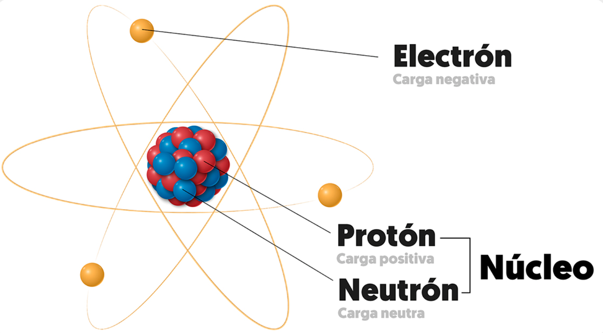
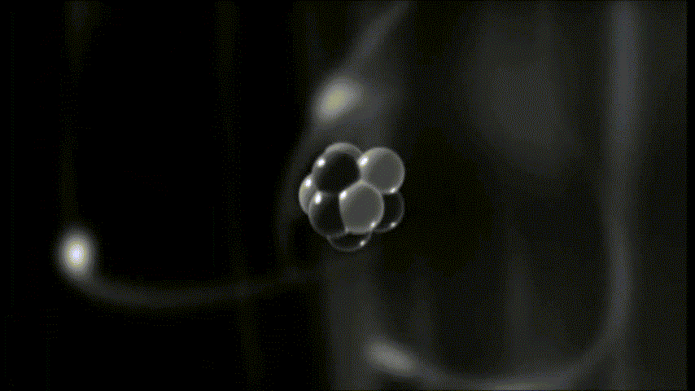
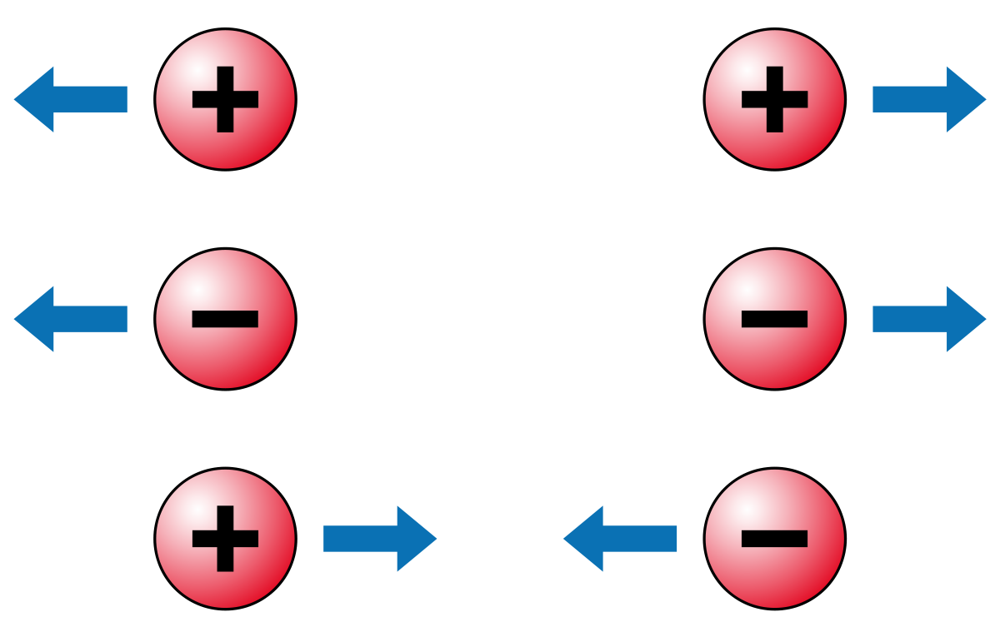

La estructura del átomo¶

Los fenómenos eléctricos tiene su origen en la estructura interna de la materia, que está formada por partículas diminutas llamadas átomos . Los átomos son los componentes básicos de toda la materia que nos rodea y determinan sus propiedades. Aunque parecen indivisibles a simple vista, los átomos están formados por dos zonas (núcleo y corteza) que albergan tres tipos de partículas subatómicas:
| ZONAS | PARTÍCULAS SUBATÓMICAS | |
|---|---|---|
| NÚCLEO | Protones (+) | Se encuentra en el NÚCLEO del átomo y se conocen también como cargas POSITIVAS |
| NÚCLEO | Neutrones (sin carga) | Se encuentra en el NÚCLEO del átomo y se conocen también como cargas NEUTRAS |
| CORTEZA | Electrones (-) | Se encuentra en la CORTEZA del átomo y se conocen también como cargas NEGATIVAS |

Definición de Átomo
El átomo es el componente fundamental de la materia, y proporciona sus propiedades
Vamos a estudiar con atención las partículas subatómicas constituyentes del átomo y la facultad de moverse que tienen los electrones.
Carga eléctrica: positiva, negativa y neutra.¶
Las subpartículas que forman el átomo tienen distinta carga eléctrica:
- Zona NÚCLEO:
- Los protones tienen carga positiva (\(p^+\)).
- Los neutrones no tienen carga (\(n\)).
- Zona CORTEZA:
- Los electrones tienen carga negativa (\(e^-\)).
Es importante saber que dos cargas del mismo signo se repelen. Por el contrario, dos cargas de diferente signo se atraen.
En estado normal cada átomo tiene el mismo número de protones que de electrones, por lo que, en este estado normal, se dice que es un átomo neutro.
Algunos átomos presentan tendencia a capturar o a perder electrones, lo que produce un desequilibrio de cargas.
- Si un átomo captura electrones queda cargado negativamente (ión negativo).
- En cambio, si pierde electrones, queda cargado positivamente (ión positivo).
Fuerzas de atracción y repulsión¶

Entre las partículas subatómicas (como protones, electrones y neutrones) existen fuerzas de atracción y repulsión, y son las responsables de mantener un átomo unido. Vamos a verlo con más detalle, pero explicado de manera sencilla:
-
Protones (+) y protones (+):
-
Se repelen porque tienen la misma carga positiva.
- Sin embargo, dentro del núcleo, esta repulsión es superada por otra fuerza (nuclear) que hace que los protones no se separen demasiado.
-
-
Electrones (-) y electrones (-):
- También se repelen porque tienen la misma carga negativa.
-
Protones (+) y electrones (-):
-
Se atraen porque tienen cargas opuestas.
-
Esto mantiene a los electrones girando alrededor del núcleo del átomo, como si fueran atados a él.
-